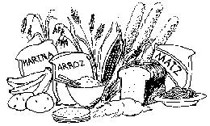
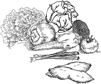

Cuando una mujer come bien, es más probable que tenga un embarazo sano y un bebé sano.
Las mujeres embarazadas necesitan comer más de lo usual. La comida extra les da suficiente energía y fuerza y ayuda a que sus bebés crezcan dentro del vientre.
Las mujeres embarazadas deben comer una variedad de alimentos cada día e incluir 1 ó más alimentos de estos 3 grupos:
Carbohidratos: como el arroz, maíz, trigo, mijo, yuca, malanga o plátanos.

Proteínas: como los frijoles, guisantes, lentejas, huevos, nueces y semillas, queso, leche, yogurt, carnes de cualquier tipo, pescado o insectos.
Frutas y vegetales: tales como verduras de hoja verde, zanahorias, repollo o col, pimientos, naranjas, melones, piñas, papayas o mangos.
Si una mujer embarazada no come lo suficiente, anime a su familia, vecinos y amigos a que le compartan de su comida.Tal vez ellos la pueden ayudar a cuidar su jardín, le den huevos de sus gallinas o cocinen un poco de más para regalarle.
Hierro y ácido fólico: Una mujer embarazada también necesita suficiente hierro para prevenir la anemia y ácido fólico para prevenir que el bebé tenga defectos de nacimiento. Debe tomar suplementos de estos para asegurarse que tenga suficiente de los 2. Cada día debe tomar de 400 a 500 microgramos de ácido fólico y 300 miligramos de sulfato ferroso (60 miligramos de hierro) hasta que el bebé nazca.
{% endblock %} {% block footer %} {% endblock %}